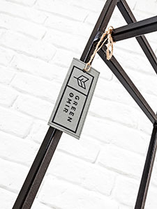
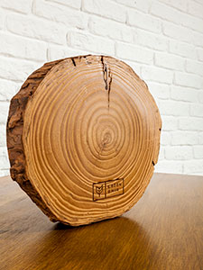
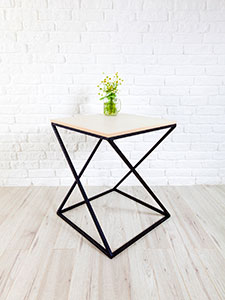
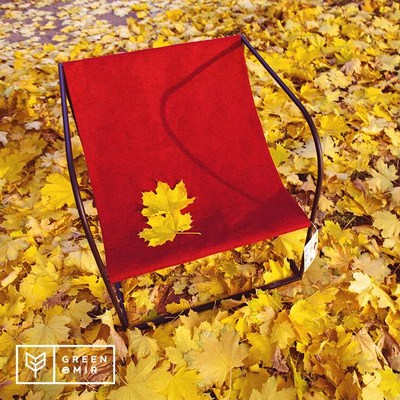
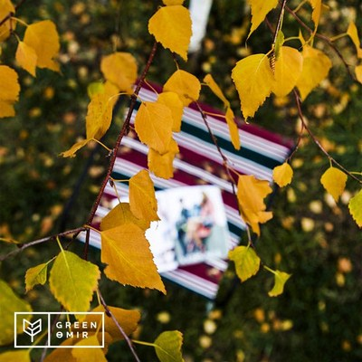
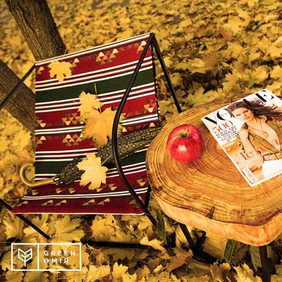
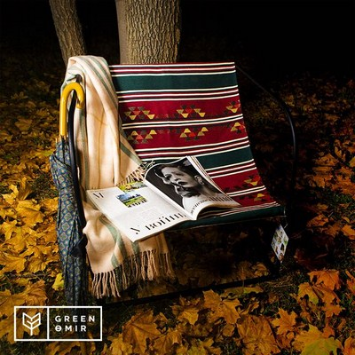

Спрос на экологичные товары растет с каждым годом. Отечественные предприниматели реагируют на него соответствующим предложением, в том числе предлагая зеленые концептуальные решения для обустройства дома и офиса. Об одном из таких проектов мы расскажем сегодня. Речь пойдет о компании Green Өmir, которая производит мебель для дома и офиса в стиле Loft.
Предыстория
Основатель Green Өmir Бибигуль Жузбаева пришла к собственному бизнесу после многолетней работы в корпоративном секторе. Руководила иностранной компанией и успешно внедряла энергоэффективные и энергосберегающие решения в области теплоснабжения. Любовь и тяга к натуральным, практичным материалам проявлялась у нашей героини с детства.
— Бибигуль, как пришла идея заняться производством мебели?
Когда я работала в крупных компаниях, приходилось несколько раз переезжать всей организацией. Мы заказывали дорогую мебель для офиса из-за рубежа и ждали заказ несколько месяцев. Мысль заняться своим делом мелькала у меня время от времени. Но корпоративный мир поглощал полностью. Когда появился свой дом, я опять столкнулась с проблемой — в магазинах мебели много, но нет той, которая нравилась бы мне. Это было что-то дорогое и нефункциональное, тяжелое и не «зеленое». Я стала отслеживать тренды в мебельном мире. В мае этого года начала свое производство стильной экологичной мебели. Наша мебель имеет легкую и прочную стальную конструкцию и натуральные поверхности — дерево, ЛДСП, камень. Есть рациональная линия мебели, которая быстро разбирается и легко транспортируется, имеет съемные чехлы из натуральных тканей. Думаю, в современном мобильном мире это важно учитывать, и наши клиенты высоко оценивают наше стремление сэкономить их время.
Справка
Природа — лучший дизайнер, который подбирает невообразимые сочетания цветов, создавая неповторимую палитру. В моде стремление быть ближе к природе. К тому же экомебель — возможность свести к минимуму вредные выбросы в атмосферу. Для обеспечения потребительских свойств экомебели в Европе разработаны специальные стандарты и технические условия. В Казахстане этот процесс еще идет.
— Расскажите о вашей команде.
Команда у нас молодая, креативная и высокопрофессиональная. Я рисую эскизы, веду аккаунты в социальных сетях, выбираю материалы. Нахожу интересные идеи, отслеживаю тренды у дизайнеров, на тематических сайтах, в журналах. Критерий выбора модели мебели — это то, что я захотела бы купить и иметь в своем доме или офисе. А дальше обсуждаем с ребятами детали — расчеты, размеры, стальную конструкцию, выбор материала, цветовую гамму. Считаю, что важно грамотное представление продукции, поэтому с нами в команде работают профессиональные маркетолог, фотограф. Так рождается стильная дизайнерская мебель Green Өmir.
— Не тяжело работать в таком режиме?
Когда вы занимаетесь любимым делом, усталость бывает приятной.
— Какова ценовая политика Green Өmir?
Цены от 15 тысяч до 200 тысяч тенге. Зависят в основном от материала. Допустим, сосна стоит недорого. А вот ЛДСП (ламинированная древесно-стружечная плита) вопреки стереотипам о ее дешевизне может стоить дороже. Дело в том, что ЛДСП бывает разной, в том числе и премиального качества, маркированной «зелеными» стандартами. Именно такой материал мы используем.
Справка
Экоофисы — воплощение комплексного подхода к реализации эффективной рабочей среды с созданием при этом здоровой и комфортной атмосферы. В первую очередь, это происходит за счет организации условий: обилия дневного света, выбора в пользу эргономичной и экомебели, чистого воздуха с вентиляцией, высокого уровня шумоизоляции, современной системы утилизации отходов и экономии ресурсов. В Казахстане тренд экологичных офисов тоже набирает обороты. Один из таких примеров мы приводили в материале «Зеленый офис по собственному желанию». Речь идет о предпринимателе, основателе портала «Учет.kz» и неравнодушном к природе алматинце Максиме Барышеве, который затеял строительство «зеленого» здания для своих сотрудников — первого экологически чистого офиса в Алматы.
- Сколько видов товара у вас в наличии?
Около 30. Разрабатываем и постоянно дополняем свою линейку мебели. На сегодняшний день у нас есть линии Light, Business, Open Space, Unique Wood Collection и др.
— За какой срок осуществляется заказ?
Заказы мы выполняем в течение 2-5 дней. Доставка и установка мебели — бесплатно.
— Поделитесь главной ценностью вашей компании. Чем отличается Green Өmir от других?
Green Өmir — это жизнь по экологичным принципам, использование «правильной» древесины, материалов, бумаги. Наша миссия — развитие и внедрение «зеленого» решения в мебельной индустрии. Люди покупают продукцию, не задумываясь о качестве и происхождении материалов. Мы же хотим донести до людей, что важно задумываться над тем, что мы приобретаем для обустройства домов или офисов. Ведь большую часть времени мы проводим именно там. Наша компания не планирует ограничиваться производством мебели.
— Если говорить о рынке в целом, то другие игроки отмечают, что девальвация плохо отразилась на отечественной мебельной индустрии. Ощущаете ли вы это на себе?
Нам еще рано об этом говорить, потому что мы только открылись. В основном клиенты приходят к нам с эвентов, в которых мы принимаем участие.
— А где вы выставляли мебель Green Өmir?
За 5 месяцев мы приняли участие в нескольких мероприятиях: Almaty Pop Up Store, Mamas Market, Esquire Picnic, Art Energy Almaty, «Астана архитектура — 2016», Elge Oralu. Нашу мебель можно приобрести в Experimentarium Concept Store, ТРЦ «Достык плаза», в салоне компании I' House (Алматы, Астана), в ЖК Sultan Apartments (Астана).
— А во сколько обходится участие в фестивалях, или вам предоставляли место бесплатно?
В основном участие в подобных мероприятиях платное, стоимость — от 50 тысяч и выше, в зависимости от расположения выставочной площади. Исключением стал городской фестиваль Art Energy Almaty.
|  |  |  |  |
С ассортиментом Green Өmir можно ознакомиться на страницах в Facebook и Instagram. Скоро мы запустим сайт компании www.greenomir.com.
Источник: and.kz